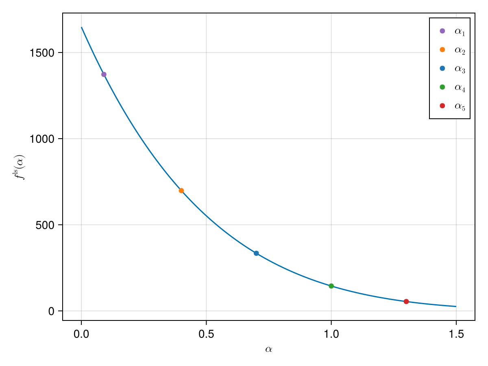

Backtracking Line Search
A backtracking line search method determines the amount to move in a given search direction by iteratively decreasing a step size $\alpha$ until an acceptable level is reached. In SimpleSolvers we use the sufficient decrease condition to quantify this acceptable level. The sufficient decrease condition is also referred to as the Armijo condition and together with the curvature condition it forms the Wolfe conditions[1] [1].
Backtracking Line Search for a Line Search Problem
We note that the Wolfe conditions can be written very concisely by using line search problems:
\[\frac{d}{d\alpha}f^\mathrm{ls}(\alpha) = \frac{d}{d\alpha}f(\mathcal{R}_{x_k}(\alpha{}p)) = \langle d|_{\mathcal{R}_{x_k}(\alpha{}p)}f, \alpha{}p \rangle,\]
where the tangent map of a retraction is the identity at zero [7], i.e. $T_{0_x}\mathcal{R} = \mathrm{id}_{T_x\mathcal{M}}$. In the equation above $d|_{\mathcal{R}_{x_k}(\alpha{}p)}f\in{}T^*\mathcal{M}$ indicates the exterior derivative of $f$ evaluated at $\mathcal{R}_{x_k}(\alpha{}p)$ and $\langle \cdot, \cdot \rangle: T^*\mathcal{M}\times{}T\mathcal{M}\to\mathbb{R}$ is the natural pairing between tangent and cotangent space[2] [8].
We again look at the example introduced when talking about the sufficient decrease condition and cast it in the form of a line search problem:
This linesearch problem only depends on the parameter $\alpha$. We plot it:


Example
We show how to use line searches in SimpleSolvers to solve a simple toy problem[3]:
ls_method = Backtracking()SimpleSolvers contains a function SimpleSolvers.linesearch_problem that allocates a LinesearchProblem that only depends on $\alpha$:
We now use this to compute a backtracking line search:
ls = Linesearch(problem, ls_method)
α = 50.
αₜ = solve(ls, α, params)5.0And we check whether the SufficientDecreaseCondition is satisfied:
sdc = SufficientDecreaseCondition(c₁, problem.F(0., params), problem.D(0., params), alpha -> problem.F(alpha, params))
sdc(αₜ)trueSimilarly for the CurvatureCondition:
c₂ = .9
cc = CurvatureCondition(c₂, problem.D(0., params), alpha -> problem.D(alpha, params))
cc(αₜ)trueLengthening the step
A backtracking search only ever shrinks. It therefore hands back the trial step it was given whenever that step is acceptable — and on a search direction whose natural scale is larger than the trial step, that is every single iteration. The step is pinned at the caller's ceiling and the outer solve crawls.
This is a property of the search rather than of the method that produced the direction. In the case that prompted it (issue #174) a DFP direction wanted $\alpha \approx 11$ throughout and took 49 679 iterations with Backtracking against 134 with Bisection, which brackets rightwards and is therefore immune; BFGS, whose direction is already scaled like a Newton step, was unaffected. Note that no caller-side rule for the initial step fixes this: the scale deficit is persistent, not an artefact of initialisation, so every heuristic that recomputes $\alpha$ from the current iterate helps the under-scaled method and hurts the well-scaled one.
Setting expand makes the search two-sided. When the first trial step is accepted, it is lengthened (see SimpleSolvers.backtracking_extrapolation) while each longer trial keeps satisfying the sufficient decrease condition and strictly improving the merit:
using SimpleSolvers
using SimpleSolvers: steplength, trials
# a direction under-scaled by an order of magnitude: the merit is minimised at α = 11,
# but the caller only offers α = 1
prob = LinesearchProblem{Float64}((α, _) -> (α - 11.0)^2, (α, _) -> 2(α - 11.0))
shrink = solve_with_status(Linesearch(prob, Backtracking()), 1.0)
grow = solve_with_status(Linesearch(prob, Backtracking(; expand = true)), 1.0)
(shrink = (steplength(shrink), trials(shrink)), expand = (steplength(grow), trials(grow)))(shrink = (1.0, 1), expand = (10.0, 2))The step reaches the right scale — that is the whole of the problem — in two merit evaluations rather than one.
It is off by default, and the reason is worth stating: a well-scaled direction is the common case, and it must not pay for a feature it cannot use. It does not. The model that decides whether to expand is the same quadratic through $\varphi(0)$, $\varphi'(0)$ and $\varphi(\alpha)$ that SimpleSolvers.backtracking_interpolation uses on the way down, so all three values are already in hand and the decision is free:
newton = LinesearchProblem{Float64}((α, _) -> (α - 1.0)^2, (α, _) -> 2(α - 1.0))
st = solve_with_status(Linesearch(newton, Backtracking(; expand = true)), 1.0)
(steplength(st), trials(st)) # α = 1 is the model minimum: no extra evaluation is spent(1.0, 1)That matters because for the merit of a NonlinearSolver one evaluation is a full residual evaluation, the most expensive single operation of a solver step. It is also why the phase does not test the curvature condition to decide when to stop growing, which would cost a full Jacobian per trial. Where curvature control is genuinely required, use StrongWolfe, which brackets on the derivative; where an actual line minimiser is wanted, use Bisection or Quadratic.
This is the one phase that evaluates $\varphi$ beyond $\alpha$. The largest step it can try is $q^{\mathrm{nexpand}}\alpha$, i.e. a thousand times the trial step on the defaults. A trial whose merit is infinite or NaN is simply rejected, at the cost of that one evaluation; a merit that throws outside its domain is the caller's to guard. Setting expand is therefore a statement that $\varphi$ is evaluable that far out.
What it does not do is spend more evaluations than it was allowed to: nexpand bounds the phase from within the linesearch_max_iterations of Options, not beside it, so the whole search — ladder and expansion together — still stops at that budget.
Stagnation at the round-off floor
The sufficient decrease condition demands a decrease proportional to $\alpha$:
\[\varphi(\alpha) \leq \varphi(0) + c_1\alpha\varphi'(0),\]
so once $c_1\alpha|\varphi'(0)|$ drops below one unit in the last place of $\varphi(0)$, the right-hand side rounds back up to $\varphi(0)$ exactly and the test degenerates to $\varphi(\alpha) \leq \varphi(0)$. A merit that has reached its own round-off floor — think of $\|F\|^2$ for a residual that is already pure rounding noise, which is the normal state of affairs at the end of a converged solve — then passes or fails that test essentially at random. Shrinking $\alpha$ cannot recover from this: below the round-off scale of $x$ the trial point stops differing from the base point altogether, and $\varphi(\alpha)$ is bit-identical to $\varphi(0)$.
Backtracking therefore takes the round-off resolution of the merit, $\tau =$ τ_ulps $\cdot\,\mathrm{ulp}(\varphi(0))$ (see SimpleSolvers.armijo_tolerance), slackens the condition to
\[\varphi(\alpha) \leq \min\{\varphi(0),\ \varphi(0) + c_1\alpha\varphi'(0) + \tau\},\]
and stops at the smallest step that $\tau$ can still resolve, $\alpha_\mathrm{min} = \tau/(c_1|\varphi'(0)|)$ (see SimpleSolvers.backtracking_αmin). Because $\alpha_\mathrm{min}$ is a factor $2\cdot$ τ_ulps above the step at which the rounding degeneracy sets in, the search stays clear of that region — unless $\alpha_\mathrm{min}$'s upper clamp at $\sqrt{\mathrm{eps}(T)}$ binds, which it does for a very flat merit in double precision and for essentially any merit in Float16 (the clamp is there so that a nearly flat but genuine merit is still searched at all).
The $\min$ against $\varphi(0)$ is what makes those trial steps harmless. Where the right-hand side has degenerated, the condition reduces to plain monotonicity $\varphi(\alpha) \leq \varphi(0)$: it can accept a non-increase but never an increase, and such an accept is classified LINESEARCH_FLOOR rather than reported as a decrease.
τ_ulps itself is precision-aware, because $\tau$ has to be at least an ulp or so of $\varphi(0)$ to recognise the floor and far below the $2c_1\varphi(0)$ the condition demands at $\alpha = 1$ to leave that condition meaningful. Those are compatible only while $\mathrm{eps}(T) \ll 2c_1$, which is true by ten orders of magnitude in double precision and false in Float16; SimpleSolvers.armijo_ulps caps the nominal 4 ulps accordingly, a no-op in Float64 and Float32. Without the cap a Float16 merit that genuinely decreased by two ulps — the smallest that precision can express — was reported as LINESEARCH_FLOOR, which a NonlinearSolver counts towards max_stalls, so a converging solve could be reported as stagnated.
The situation is reported rather than hidden. solve_with_status returns a LinesearchStatus whose LinesearchOutcome distinguishes a step that genuinely decreased the merit (LINESEARCH_DECREASED) from one accepted only because nothing can decrease it (LINESEARCH_FLOOR):
using SimpleSolvers
using SimpleSolvers: outcome, trials, steplength, issufficient, isfloor
# a merit that is pure round-off noise: every α > 0 lands one ulp above φ(0)
noise = LinesearchProblem{Float64}((α, _) -> α > 0 ? nextfloat(1.0) : 1.0, (α, _) -> -2.0)
ls = Linesearch(noise, Backtracking(); verbosity = 0)
st = solve_with_status(ls, 1.0)
(outcome(st), trials(st), steplength(st), st.αmin)(LINESEARCH_FLOOR, 33, 4.440892098500626e-12, 4.440892098500626e-12)isfloor(st), issufficient(st)(true, false)A LINESEARCH_FLOOR outcome is not an error: it says that no line search can make progress at this point, which is normally a statement about the problem rather than about the search. A NonlinearSolver treats it as a stalled step (see SimpleSolvers.stalled_step) and stops after max_stalls of them, reporting the residual it did achieve against the tolerance that was requested — the usual cause being an f_abstol below the residual's own round-off floor. See Options.
- 1If we use the strong curvature condition instead of the standard curvature condition we conversely also say that we use the strong Wolfe conditions.
- 2If we are not dealing with general Riemannian manifolds but only vector spaces then $d|_{\mathcal{R}_{x_k}(\alpha{}p)}f$ simply becomes $\nabla_{\mathcal{R}_{x_k}(\alpha{}p)}f$ and we further have $\langle A, B\rangle = A^T B$.
- 3Also compare this to the case of the static line search.